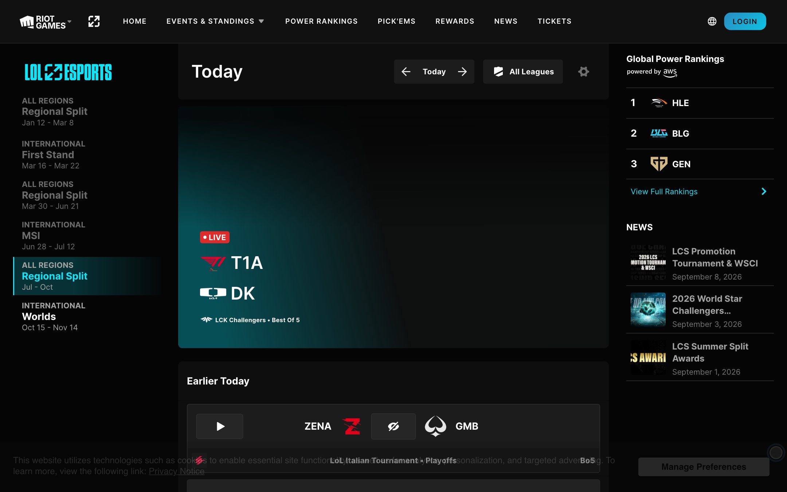
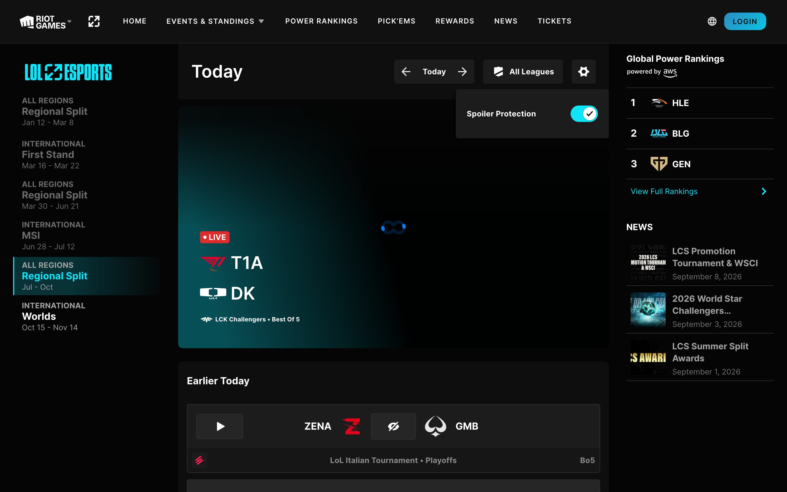

它不是发布页，是一个每天要回来看的赛程工具
拆之前先分清体裁。这个仓库里此前的多数研究对象是营销落地页：一屏一个卖点，滚动即叙事。lolesports 不是。
抓取时页面标题直接是 LoL Esports | SCHEDULE实锤，
/en-US 这个根路径本身就是赛程，没有独立的品牌首页做前置。
这个决定很重。它意味着产品团队认定用户来这里只有一件事要办：今天有没有比赛，几点，在哪看，打完了没有。 营销叙事被让给了 Riot 的其他站点，这里只留下功能。所以拆它的方法也要换：不该问「首屏怎么讲故事」， 该问「信息密度怎么排、状态怎么区分、默认值替谁做主」。
页面本身不滚动。实测 document.body.scrollHeight 等于 window.innerHeight（900 = 900）实锤，
真正在滚的是一个高 calc(100dvh - 80px) 的内部容器，内容高 12730px实锤。
这是应用壳层的做法，不是文档页的做法——顶栏永远在，左右两栏各自独立，只有中间那列跟着走。
main 的实测值是 display:grid; grid-template-rows:80px 1fr，区域名 "navigation" "content"实锤。
到 390px 宽时列数塌成 1，两侧栏收起，中列全宽实锤。
十一类页面，三层功能，一个只服务于「今天看什么」的中栏
设计系统只是一半。把路由逐个走一遍，能看出这个产品把功能分成了三层： 核心层只有赛程，周边层是排名、新闻、赛事页、手册、回放、其他联赛， 账号层只有竞猜和奖励两项——也正是唯二能给你东西的两项。
| 路由 | 功能 | 实测特征 |
|---|---|---|
| /en-US | 赛程 | 根路径即此页，没有独立首页 |
| /en-US/gpr | 全球战力排名 | 跳 /gpr/2026/current，年份分档，带更新时间戳 |
| /en-US/pickems | 赛事竞猜 | 按赛事分卡，有 ENDED 状态 |
| /rewards | 观赛奖励 | 唯一强制登录，未登录直接跳 Riot 账号页 |
| /en-US/news | 新闻 | LOAD MORE 增量加载 |
| /en-US/tickets | 门票 | 不是商城，是资格窗口，抓取时为 CLOSED |
| /en-US/results | 其他联赛 | 二级联赛排名，横向切联赛 |
| /en-US/tournament/<id> | 赛事页 | 跳 /overview，赛程、排名、战队 |
| /en-US/season/<id>/handbook | 联赛手册 | 赛制规则 |
| /vod/<matchId>/<game> | 录像回放 | 按「比赛 + 第几局」定位，首页一屏挂了三十余个 |
三栏各管一件事
左栏是纵深导航，把赛季时间轴当目录，回答「我要看哪个赛事」； 中栏是产品本体，全站唯一的主滚动区，回答「现在有什么可看」； 右栏是别处功能的橱窗——排名和新闻各露三条就跳走，它不承担任何自身完整的功能， 职责是把流量导向周边层。
移动端三栏塌成一栏，左右两栏直接收起，中栏内容顺序不变实锤。 这说明中栏本来就是自足的，两侧是增强而非必需。
赛程的取数逻辑：三条并发查询
全站数据走同一个 GraphQL 端点 /api/gql。首页加载时并发三条 homeEvents实锤：
| 用途 | 时间窗 | 状态筛选 | 页大小 |
|---|---|---|---|
| 今日前后 | 前 2 天 → 当日结束 | completed, unstarted | 300 |
| 直播中 | 不限时间 | inProgress | 300 |
| 未来赛程 | 当日 → 60 天后 | unstarted | 40 |
直播那条不带任何日期参数。一场比赛可能跨零点，也可能因加赛拖出窗口，用日期筛会漏—— 状态比时间可靠，所以直播单独按状态查。这是三条里最见功力的一条。
向未来用日期窗，向过去用游标
点 Load More 触发的是第四种形状：不带日期，改带一个 pageToken实锤。
这个 token 做 base64 解码是：
/* 线上原值 */ pageToken: "b2xkZXI6OjExNTU2NDc5NzE2MzgyMTE3NQ==" /* base64 解码后 */ older::115564797163821175 /* 即「比这个事件 ID 更早的一批」 */
两个方向两套策略，不是不一致，是各自选了对的工具：未来的赛程已排定且稀疏，按日期切最自然； 历史比赛密集且无限延伸，游标翻页才不会因为某几天没有比赛而翻空。
另外两点：联赛筛选在前端做，操作面板不产生任何新请求实锤——
首屏已经把 300 条拉进内存，没必要回服务端。日期切换不改 URL，
切完地址栏仍是 /en-US实锤，日期是客户端状态而非路由。
代价是没法把某一天的赛程发给别人，也没法用后退键回上一天——对一个高频分享赛果的社群产品，这个取舍不小。
剧透逻辑是贯穿全栈的，不只是一层遮罩
- 请求层：
vodType: ["recap"]跟着「今日前后」那条一起要，结果与回放是一起拉的。 - 界面层：已结束的比赛遮住比分，粒度分两级——只遮比分，或整张卡连队名一起遮。
- 状态层：
inProgress不遮，正在打没有结果可剧透。 - 偏好层：齿轮里唯一的开关，匿名默认开启，存
localStorage。
由此才能理解赛程为什么排成「直播 → 今日 → 更早」而不是按时间倒序： 直播不需要保护放最前，今日的已结束比赛需要保护但用户最想看，更早的保护价值递减往下沉。 这个排序本身就是按「剧透风险乘以关注度」排的。
它的边界比看上去小
三处证据指向同一个结论：这不是 LoL 专用的站，是 Riot 电竞站群的一套壳。数据层的 sport 参数、
样式层的五个 data-theme、字体层的 27 支预加载实锤，是同一件事在三层的映射。
而且它自己负责的部分比看上去小：顶栏不属于它（Riot 跨产品共用组件，内容清单从另一个 CDN 单独拉）， 直播播放器不属于它（iframe 嵌第三方平台），登录不属于它（跳 Riot 账号）。 它真正拥有的，是三栏壳层加赛程逻辑。
完整的路由表、查询变量与局限见 功能与架构.md。
真实渲染，作为下面所有数值的对照物

三层 token：调色板、品牌主题、组件语义
这套 CSS 由 Panda CSS 生成（样式表里留着 --made-with-panda 这个签名变量实锤），
颜色分三层声明，复刻时该引用第三层。
第一层 · 原始调色板
命名是 --colors-<族>-<档>。中性色分两组：black-1xx 偏蓝（#0f1519 系），
black-5xx 是纯中性（#050505、#0e0e0e）。这两组不是冗余——前者给整站底色，
后者给赛程内容区，实测 body 背景是 rgb(15, 21, 25) 而卡片分组底是 #0e0e0e实锤。
点色块复制色值
第二层 · 品牌主题
样式表里有五个 [data-theme=…] 块：lol、val、wr、tft、rb实锤。
每块重定义同一组语义名，其中 --colors-surface-brand 在 lol 下取青、在 val 下取 #dc3030、
在 tft 下取 #ffb400、在 rb 下取 #ef7d00。详见第 07 节。
第三层 · 组件语义
名字直接写组件和角色：--colors-home-live、--colors-home-spoiler-text、
--colors-home-card-hover-bg、--colors-home-season-overview-accent-text实锤。
这一层的好处在下一节的类名里体现得更直白。
| 角色 | 语义 token | 实测值 | 出处 |
|---|---|---|---|
| 整站底 | --colors-bg-primary | #0f1519 | body 计算样式 实锤 |
| 内容区底 | --colors-home-bg | #050505 | 样式表最高频色值 实锤 |
| 分组底 | --colors-home-group | #0e0e0e | 计算样式 实锤 |
| 卡片底 | --colors-home-card-bg | #262626 | token 定义 实锤 |
| 卡片描边 | --colors-gray-500 | #303030 | 计算样式 1px solid 实锤 |
| 品牌主色 | --colors-lol-cyan-300 | #10e4f9 | 选中态文字计算色 实锤 |
| LIVE | --colors-home-live | #de2b2b | 徽标背景计算色 实锤 |
| 剧透文案 | --colors-home-spoiler-text | #a3a3a3 | 遮罩文字计算色 实锤 |
另有一组七档稀有度色 --colors-lol-rarity-*（标准绿、史诗青、传说红、神话紫、终极橙、超凡粉、殿堂黄）实锤，
赛程页不用，属于奖励与藏品模块的配色，说明这套 token 供整个 lolesports 站群共用，不止赛程。
预加载了三十多支字，界面上只跑一支
页面里有 27 个 link rel=preload as=font实锤，
document.fonts 报出四十余个字族名，包含 Beaufort for LoL、Tungsten、Transducer、TT Norms Pro Compact、
Riot Sans、Noto Sans 的日韩泰简繁六个文种版本实锤。
但把可见文本节点逐个量一遍，答案很干脆：
| 渲染字族 | 文本节点数 | 出现在哪 |
|---|---|---|
| inter | 337 | 赛程页全部界面文字 |
| Inter（另一支同名） | 15 | 右栏第三方嵌入模块 推断 |
| colfax | 5 | Riot 通用顶栏 |
| Helvetica | 4 | Cookie 同意条 |
| ui-sans-serif | 2 | 未命中自定义字族的兜底 |
也就是说，那些华丽的品牌展示体一个都没上场。它们属于设计系统里 display/* 和
headline/* 这两级排版 token，而赛程页从头到尾只用 label/* 和 title/*。
这是个很清醒的取舍：功能页不需要品牌嗓门，需要的是小字号下的可读性和数字对齐。
语义排版标度：六族十八档
不是按字号命名，是按用途命名——display、headline、title、label、body，
每族再分 xs 到 xl。同一个名字在不同品牌、不同文种下映射到不同字族，字号和行高保持不变。
- display/lg80px / 900 / −1.6pxBeaufort，全大写
- headline/lg32px / 600Inter，页面主标题
- title/md18px / 700赛季名、队名
- label/lg14px / 700 / +0.21px最高频，172 处
- label/md12px / 700 / +0.18px联赛名、日期
- label/sm11px / 700 / +0.165px徽标、角标
- body/md14px / 400正文，仅 9 处
字距的处理值得记：label 族全部正字距，且与字号成固定比例——14px 配 +0.21px、12px 配 +0.18px、
11px 配 +0.165px，都是字号的 1.5%实锤。小字加正字距是为了在深底上拉开字形；
而 headline 和 title 族字距继承（即 0），字号一大就不再需要。这条比例关系是整套排版最可复用的一处工艺。
字号标度共 21 档，从 8px 到 80px：8、10、11、12、14、16、18、20、22、24、28、32、36、40、44、46、48、52、58、64、80实锤。 小字段每档只差 1 到 2px，大字段跨度拉开——典型的信息密集型产品配置。
本页只内嵌了 Inter（开源许可，且正是该站界面实际所用）。Beaufort for LoL、Tungsten、Transducer、TT Norms Pro 属商用授权字体，抓取文件仅留作对照，不随本页分发。
DevTools 里能直接读出设计决策
Panda CSS 生成原子类，类名把 token 名写在了上面。这是拆解这个站时最省力的一段—— 不用猜，元素的 class 属性就是它的设计规格。
/* 比赛卡的真实 class，逐字抄自线上 DOM */ <div class="bg-c_gray.506 bd-c_gray.500 bdr_4px border-style_solid bd-w_1px d_block w_100%"> /* 读出来就是：底色 gray.506、描边色 gray.500、圆角 4px、描边 1px */ /* 计算样式核对：#1c1c1c / #303030 / 4px / 1px —— 完全对上 */ /* 外层分组 */ <div class="bg-c_black.501 px_200 py_75 [&:has(+section)]:bdr-b_8px ..."> /* px_200 = 16px，py_75 = 6px，与间距标度 token÷12.5 吻合 */ /* 并且用上了 :has() 选择器做相邻兄弟判断，是线上生产代码 */
间距标度的换算关系：--spacing-100 是 8px，--spacing-200 是 16px，--spacing-75 是 6px——
token 数字除以 12.5 得像素实锤。这种命名的用意是留出插值空间：
100 和 200 之间还能塞 150，不必改名。全套十四档：4、6、8、12、16、20、24、32、40、48、64、80、120、160。
圆角只有一档在用。样式表里定义了 xs 到 full 六档，但赛程页几乎全是 4px（--radii-xs），
容器级偶尔 8px实锤。没有大圆角，没有胶囊——这是一个刻意保持方正的界面，
与「电竞广播图形」的气质一致。
剧透闸门：把结果藏起来，是这个站最重要的一次设计判断
所有体育网站的默认动作是把比分做大。这个站反过来：比赛结束后，比分默认不显示，
卡片被一层 #262626 的遮罩盖住，只写「CLICK TO REVEAL」和一个划掉的眼睛。有些卡连队名一起藏。
原因不难理解，但少有团队真敢做：电竞观众和录播的时差很大，一个韩国赛区的比赛在欧美用户睡醒时早已打完。 如果首页替他把冠军剧透了，这个用户今天就不会去看回放了。这个默认值保护的是内容消费本身。 代价是每个想快速查分的用户都要多点一下——团队把这笔账算在了看回放的人头上。
赛程卡三态
队名与比分为演示占位，非原站数据。遮罩的底色、字色、字号、字距、定位方式取自实测。
三态之间的差别是怎么做出来的
直播中的比赛不遮——正在打，没有结果可剧透，中间放 LIVE 徽标；已结束的遮住比分区；
有些整场遮住，队名也不给实锤，见 keyframes/scroll1 截图。三态共用同一个卡片骨架，
只换中间那一格的内容，这是布局上的省力处：grid-template-columns: 1fr auto 1fr，两队各占一份，
中间那格随状态变成比分、LIVE 徽标或遮罩实锤。
遮罩的实现是绝对定位盖在整张卡上（position:absolute; inset:0），不是替换 DOM实锤。
好处是揭示时不触发重排，卡片高度稳定，一列几十张卡不会因为逐张揭示而跳动。
整个设置菜单里只有这一项
页面右上的齿轮展开后是一个 280×90 的下拉面板，里面只有一行：Spoiler Protection 加一个开关实锤。 没有主题、没有时区、没有通知偏好——这个产品认为用户唯一需要调的就是「要不要替我藏结果」。 一个设置项的菜单，比任何设计说明都更能说明团队把什么当作核心。

| 元素 | 实测规格 |
|---|---|
| 面板 | 280×90 / 底 #1c1c1c / 圆角 4px / 内距 30px 20px 阴影 rgba(0,0,0,.4) −4px 4px 4px 0 |
| 标签 | textStyle_label/lg，inter 700 14px |
| 开关开启 | 50×30 / 圆角 20px / 填充 #10e4f9 / 无描边 / aria-checked="true" |
| 开关关闭 | 50×30 / 填充 #0f0f0f / 2px solid #404040 / aria-checked="false" |
| 默认值 | 匿名用户即为开启 |
| 持久化 | localStorage 键 spoiler-protection，刷新后保持 |
三处细节值得记。其一，阴影是向左偏的（-4px 4px）——面板贴着视口右侧展开，
阴影朝左才落在内容上，朝右会落到视口外白费。其二，开关用了 role="switch" 与 aria-checked
而非 input[type=checkbox]实锤，屏幕阅读器会念成开关而非复选框，语义更准。
其三，关闭态不是简单地把填充换灰，而是换成描边式（底 #0f0f0f 加 2px 描边）——
开是实心、关是空心，在深色界面里这比明暗差更容易分辨。
偏好落在 localStorage 而非账号上实锤，意味着换设备要重设一次。
对一个不强制登录的站点这是合理取舍：匿名用户占多数，本地存储零成本且即时生效。
一个 data-theme 属性，装下四个电竞品牌
样式表里五个主题块并列：lol、val、wr、tft、rb实锤。
每块重定义同一组语义名，组件代码一行不用改。这解释了为什么会预加载三十多支字——
这不是 LoL 赛程页的样式表，是 Riot 电竞站群共用的那一套。
切换主题，看语义 token 怎么换值
这个组件复刻的是左栏「当前赛段」的选中态。实测它的高亮不是给条目本身加背景，
而是在下面垫了一层绝对定位的元素：position:absolute; inset:0; z-index:below，
背景 linear-gradient(90deg, rgba(16,228,249,.2) 40.5%, rgba(16,228,249,.01) 100%)，
左边框 2px实锤。渐变在 40.5% 处才开始衰减——前四成保持满强度，
保证文字所在区域的对比度不被渐变吃掉。这个百分比是调出来的，不是默认值。
| 主题 | 产品 | surface-brand | 展示体 | 底色 |
|---|---|---|---|---|
| lol | 英雄联盟 | #10e4f9 | Beaufort for LoL | 深 |
| val | 无畏契约 | #dc3030 | Transducer | 深 |
| tft | 云顶之弈 | #ffb400 | TT Norms Pro Compact | 深 |
| wr | 激斗峡谷 | 未赋值 | — | 深 |
| rb | 未确认 推断 | #ef7d00 | — | 浅（#fafafa） |
三点值得注意。其一，wr 主题里大量语义名被赋成 --colors-clear（即 #0000）实锤——
这个主题声明了但没配色，多半是占位或已停用。其二，rb 是五个里唯一的浅色主题，
表面色是 #fafafa，说明这套语义层从一开始就没假设「一定是深色界面」。
其三，无论切到哪个主题，--colors-scoring-correct 这类竞猜判定色都固定引用 val 的绿与红实锤——
对错是功能语义，不该跟着品牌变。这个例外划得很准。
几乎不做动效，这是配得上它的选择
整份 471 KB 样式表里只有三条 cubic-bezier实锤：
| 曲线 | 性格 | 出现次数 |
|---|---|---|
| cubic-bezier(.8, 0, 1, 1) | 极端缓入，末段陡然加速 | 1 |
| cubic-bezier(0, 0, .2, 1) | 标准缓出（Material 的 decelerate） | 1 |
| cubic-bezier(.215, .61, .355, 1) | easeOutCubic | 1 |
其余过渡全用关键字。实测高频组合是 transform .2s ease-out、background .5s、
opacity .5s、all .2s ease-in-out实锤。
时间尺度只有两档：交互反馈 .2s，状态切换 .5s。没有电影级的慢层，也没有编排复杂的入场序列。
自定义 @keyframes 只有六个：spin、pulse、ping、bounce、
backgroundSwipe、diagonalSwipe实锤。前四个是工具类框架自带的通用动画，
后两个是骨架屏的扫光，跑 1.5s linear infinite。真正属于这个产品自己的动效，就是加载中的那两道扫光。
这是对的。一个用户每天来查三次赛程的工具，动效是负担不是加分。把动效预算全花在骨架屏上—— 数据要从后端拉，等待是这个页面唯一无法消除的体验缺口，扫光让等待可读。其余地方保持安静。
几处不显眼但决定质感的处理
日期头是两行，不是一行
「Sunday」和「Sep 6」拆成上下两行，同为 18px/700实锤——星期在上、日期在下， 但字号权重完全一样。这与常见的「大日期 + 小星期」相反。原因大概是：在一条只能纵向扫读的长列表里， 星期几比几号更能定位「这是不是我要找的那天」，两者同权反而扫得快。
291 张图，286 张懒加载
实测首屏 DOM 里有 291 个 img，其中 286 个带 loading="lazy"实锤。
绝大多数是战队徽标 PNG。整页零 video 元素、零 canvas——
首屏那块直播画面是 iframe 嵌入的第三方播放器实锤，
Riot 把直播播放的复杂度整个外包了出去，赛区不同则嵌不同平台。
右栏用了自定义滚动条
右侧排名与新闻那一列由 SimpleBar 接管（DOM 里有 simplebar-content-wrapper，
可滚高度 787px 对 720px 视口）实锤。三栏各自独立滚动，
这是应用壳层布局必然要付的一笔代价：原生滚动条在深色窄栏里太丑，只能自己画。
没有 backdrop-filter
顶栏实测 backdrop-filter: none实锤。这几年被玻璃拟态占领的顶栏，
在这里是实心的。深底 + 实心 + 1px 描边，是广播图形的语言，不是消费类 App 的语言。
可直接粘贴的 token 与关键代码
完整版见同目录 design-tokens.css，下面是最小可用子集。
/* ① 骨架：固定壳层 + 内部滚动，页面本身不滚 */ main{ display:grid; grid-template-rows:80px 1fr; grid-template-areas:"navigation" "content"; height:100dvh } .content{ height:calc(100dvh - 80px); overflow-y:auto } /* ② 剧透闸门：绝对定位遮罩，揭示时不重排 */ .card{ position:relative; background:#1c1c1c; border:1px solid #303030; border-radius:4px } .card .mask{ position:absolute; inset:0; display:flex; align-items:center; justify-content:center; gap:16px; background:#262626; color:#a3a3a3; font:700 14px/14px inter, Helvetica, sans-serif; letter-spacing:.21px; text-transform:uppercase; cursor:pointer } .card[data-revealed] .mask{ opacity:0; pointer-events:none } /* ③ 比赛行：两队各一份，中间那格随状态换内容 */ .row{ display:grid; grid-template-columns:1fr auto 1fr; align-items:center; gap:16px; padding:16px } /* ④ 选中态：垫一层渐变，不给条目本身加背景 */ .season{ position:relative } .season[aria-current]::before{ content:""; position:absolute; inset:0; z-index:-1; border-left:2px solid var(--brand); background:linear-gradient(90deg, color-mix(in srgb, var(--brand) 20%, transparent) 40.5%, transparent 100%) } /* ⑤ 小字正字距 = 字号 × 1.5%，这条比例整套排版都在用 */ .label-lg{ font-size:14px; letter-spacing:.21px; font-weight:700; line-height:14px } .label-md{ font-size:12px; letter-spacing:.18px; font-weight:700; line-height:12px } .label-sm{ font-size:11px; letter-spacing:.165px; font-weight:700; line-height:11px } /* ⑥ 品牌主题层：组件只认语义名 */ [data-theme="lol"]{ --brand:#10e4f9; --live:#de2f2f } [data-theme="val"]{ --brand:#ff4655; --live:#ff4655 } [data-theme="tft"]{ --brand:#e2ac57; --live:#fb293a }
三个容易做错的地方
- 别把遮罩做成条件渲染。用 DOM 增删来切换会引起卡片高度跳动，长列表里逐张揭示时观感很差。原站用的是覆盖层加透明度。
- 别给内容区用
100vh。原站用100dvh实锤，移动端地址栏收起时才不会露出空白或产生双滚动条。 - 别把品牌色写进组件。组件只引用
--brand这类语义名，颜色由外层data-theme决定。这套系统能同时服务四个品牌，全靠这条纪律。
哪些是量出来的，哪些是看出来的
实锤来自两条链路：一是 Playwright 在真实浏览器里读 getComputedStyle，
二是服务端直取样式表原文（471 KB，三个文件）后做模式挖掘。两者冲突时以计算样式为准。
结构化结果在 tokens.json，资产出处在 real-assets/manifest.json。
推断共四处，均已在正文标出：rb 主题对应哪个产品；右栏那支大写 Inter 属于第三方模块；
wr 主题为占位或停用；日期头两行同权的意图。这四条没有直接证据支持，只是观察加常识。
没拿到的：登录态之后的界面、移动端原生 App、各赛区直播平台的差异。 逐条说明见 出处与方法.md，数值逐项核对见 事实核查.md。